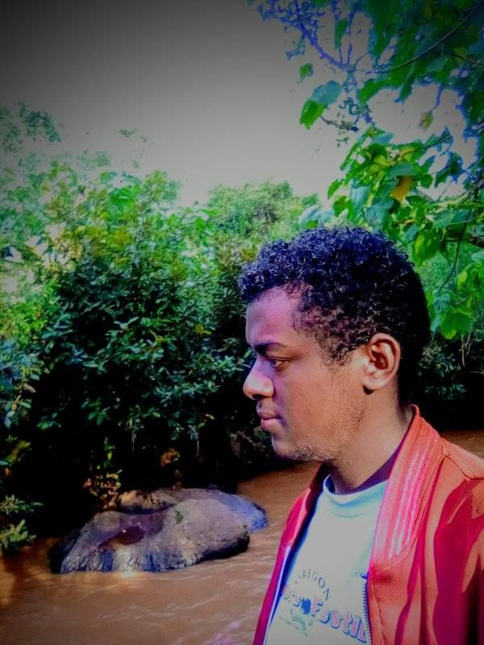
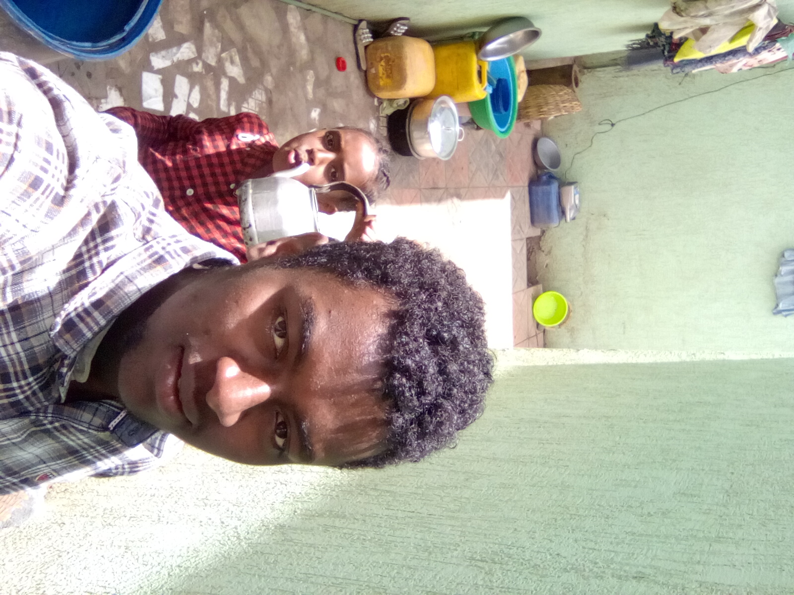

I score high in University Enterance Exam and attend the college of
my choice. After joining University I get good grades in my major. I
have many ideas that help to change the lives of many people. Before
graduation I want to develop them into real products.
about
My name is Endale Yohannes. I'm a 3rd-year Software Engineering student at Addis Ababa University and a devout Christ-follower.
 I love problem-solving. Whether it is finding the most efficient way to write a line of code or figuring out which way is the best fit in progression, I love the challenge of finding a way and discovering a solution. And I am also interested in learning new technologies, new programming languages, and new ways to solve problems.
I have many skills and qualities. I build over the year. I am good at planning and organizing my work. I can work under pressure. I am fast learner if you give me some task, I will learn it quiqly and I will do it well.
